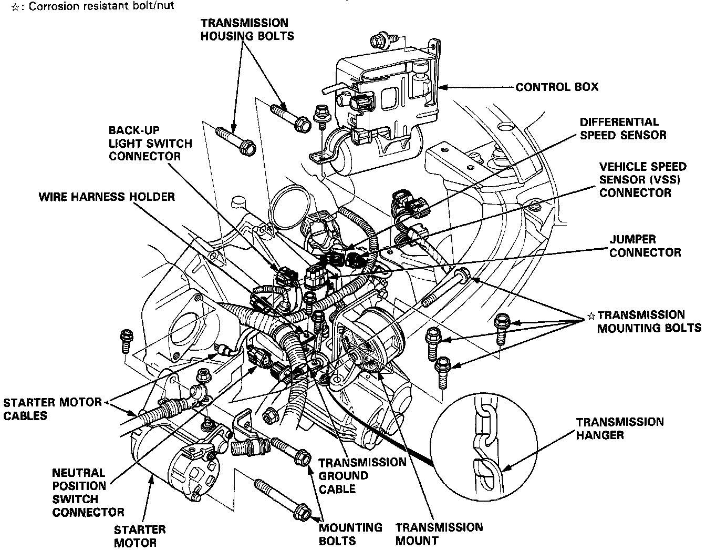
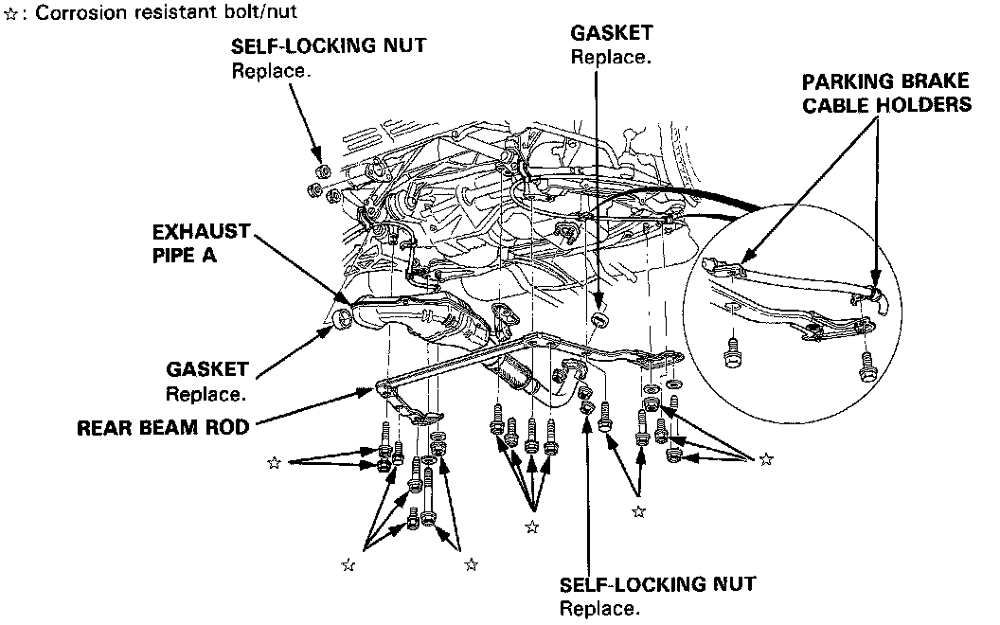
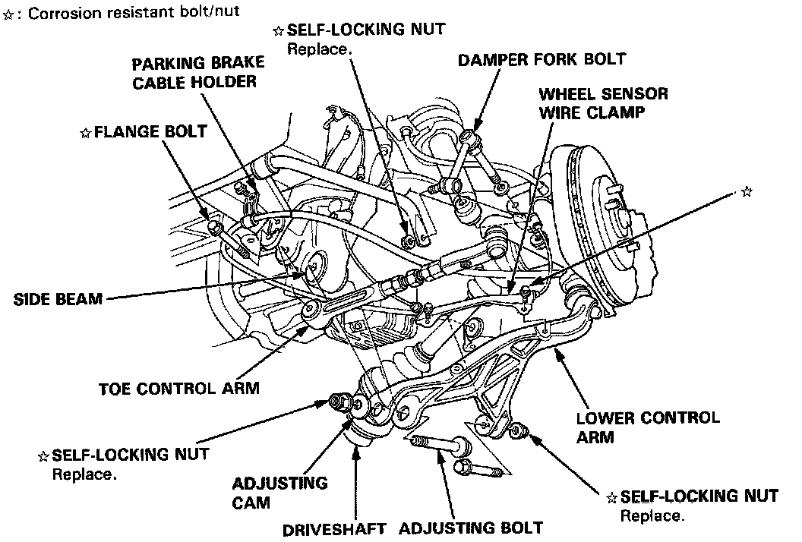
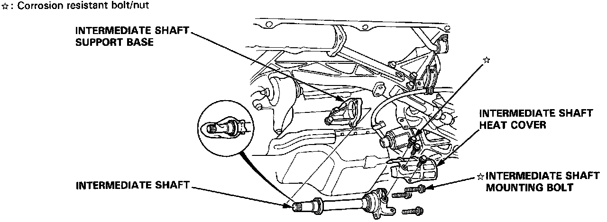
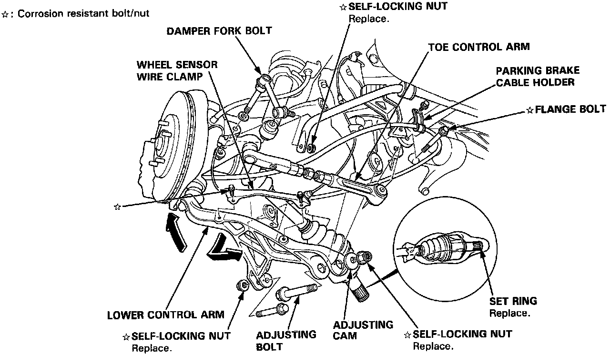
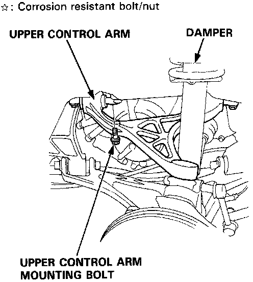
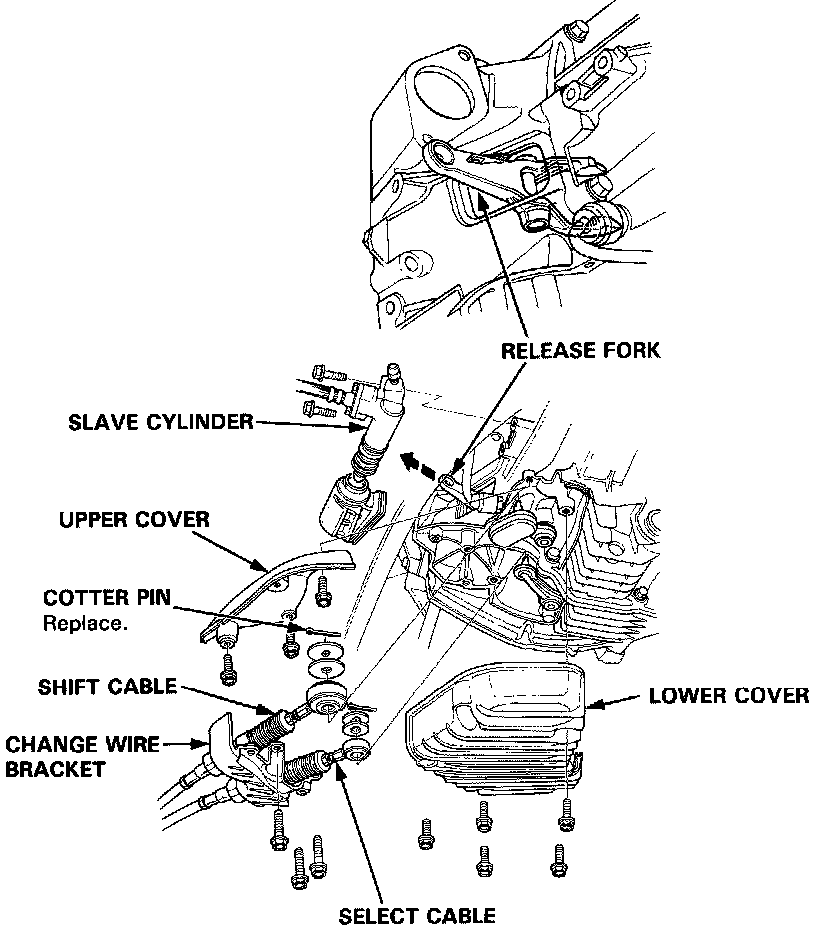
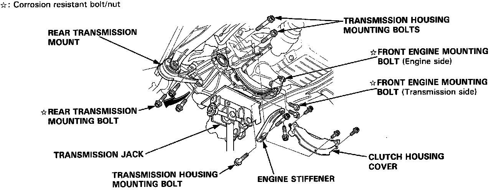

Manual Transmission/Transaxle: Service and Repair
TRANSMISSION ASSEMBLY REMOVAL
NOTE: Make sure lifts are placed properly, and hoist brackets are attached to correct positions.
CAUTION: Use fender covers to avoid damaging painted surfaces.

1. Check and record the rear wheel alignment.
2. Disconnect the battery negative (-) and positive (+) cables from the battery.
3. Drain transmission oil. Reinstall the drain plug with a new washer.
4. Remove the strut bar.
5. Remove the air cleaner assembly.
6. Remove the connectors from the control box, and remove the control box.
CAUTION: Do not remove the vacuum tubes from the control box.
7. Remove the wire harness holder, jumper connector and transmission ground cable.
8. Disconnect the back-up light switch, neutral position switch, differential speed sensor, and vehicle speed sensor (VSS) connectors.
9. Disconnect the starter motor cables, then remove the starter motor.
10. Remove the transmission mount.
11. Remove the two transmission housing bolts.

12. Remove the parking brake cable holders from the rear beam rod.
13. Remove the rear beam rod.
14. Remove the front exhaust pipe A.

15. Remove the parking brake cable holder and the wheel sensor wire clamp.
16. Remove the bolt, and separate the toe control arm from the side beam.
17. Remove the damper fork bolt.
18. Remove the bolts, and separate the lower control arm from the side beam.
19. Pry the driveshaft out of the differential. Pull and remove it.

20. Remove the intermediate shaft heat cover and the intermediate shaft mounting bolts.
21. Pry the intermediate shaft out of the differential. Pull and remove it.
NOTE:
^ Coat all precision finished surfaces with clean engine oil or grease.
^ Tie plastic bags over the driveshaft ends.

22. Remove the parking brake cable holder and the wheel sensor wire clamp.
23. Remove the bolt, and separate the toe control arm from the side beam (see section 18).
24. Remove the damper fork bolt.
25. Remove the bolts, and separate the lower control arm from the side beam.
26. Pry the driveshaft out of the differential. Pull and remove it.
NOTE:
^ Coat all precision finished surfaces with clean engine oil or grease.
^ Tie plastic bags over the driveshaft ends.


27. Remove the one of the upper control arm mounting bolt.
28. Remove the lower cover, change wire bracket and upper cover.
29. Remove the shift cable and select cable.
30. Remove the slave cylinder from the transmission.
NOTE: Do not operate the clutch pedal once the slave cylinder has been removed.
31. Remove the release fork from the clutch release hanger, then hang the release fork on the clutch housing.

32. Remove the clutch housing cover.
33. Attach a chain hoist to the transmission hangers.
34. Place a jack under the transmission, and raise the transmission just enough to take weight off mounts.
35. Remove the front engine mounting bolts on the transmission side, and retighten the bolt on the engine side.
CAUTION: Loosen the front engine mounting bolt on the engine side, but do not remove it. After removing the two bolts on the transmission side, be sure to retighten the bolt on the engine side.
36. Remove the rear transmission mounting bolts and engine stiffener.
37. Remove the transmission housing mounting bolts.
38. Pull the transmission away from the engine until it clears the mainshaft, then lower it on the transmission jack.